소중함을 알기에
365일 기다리고 있습니다
 

소중함을 알기에
365일 기다리고 있습니다

1666-7501
탑케어동물의료원은 2차 진료 중심의 거점병원으로,
최선의 진료, 최상의 보살핌, 최고의 사랑과 함께 합니다.
치료의 한계를 넘어, 삶의 새로운 가치를 위해 꾸준한 연구를 바탕으로 진료합니다.
최신식 의료장비, 최고의 의료진, 쾌적한 공간으로 보호자도 반려동물도 안심하고 내원하실 수 있습니다.
안전한 마취, 정확한 판독
탑케어동물의료원의 영상센터는 대학병원 수준의 최고사양 HDxt 1.5 MRI, 64ch CT,
필립스 EPIQ Elite 정밀초음파, 캐논 정밀초음파를 보유하고 있습니다.
노령, 중증 질환을 가진 동물들의 마취 시간을 줄이며,
세부적 진료와 촬영으로 보다 나은 결과를 기대할 수 있습니다.
탑케어동물의료원은 24시간 응급 진료가 가능합니다.다년간 쌓아온 경험을 통하여
다양한 변수에 신속, 정확하게 대처할 수 있습니다.
(2023년 08월 기준)
진료동물수16,330마리
20년
20년 동안 동물병원을 운영한 대표원장이 함께합니다.21분야
분야의 각 질환별 전공 수의사가 진료합니다.56명
56명의 파트별 전문가가 다방면으로 도움을 드리겠습니다.TOPCARE ANIMAL MEDICAL CENTER
특화된 강아지 진료
내과, 외과, 응급의학과, 영상의학과, 안과, 치과, 심장&신장,
재활센터 분리로 세분화된 진료를 약속합니다.
대형견 진료실을 구분지어 소형견, 중형견, 대형견이
스트레스 받지 않는 진료가 가능합니다.
골드 등급 획득
탑케어동물의료원은 규정에 맞는 크기의 넓은 고양이 입원장,
고양이 전문 대기실 및 진료실에서 스트레스 받지 않는 진료를 약속합니다.
안정을 취할 수 있는 환경과 시설을 갖추어 Cat Friendly Clinic에서 Gold 등급을 획득했습니다.
24시간 365일 연중무휴
빠른상담 및 예약서비스
개인정보수집동의 자세히 보기